(brief) Introduction to the R Studio Interface
Linear (OLS) Regression
- Assumptions
- Continuous Variables
- Categorical Variables
- Multiple Variables
Library and Online Resources
Linear Regression with R
Fall 2016
Josh Quan - joshua.quan@tufts.edu
Tisch Library
Goals for the Hour
Preliminaries
tinyurl.com/tischR-OLS
Open RStudio: Windows -> Data & Statistical Applications -> RStudio
In RStudio: Session - > Set Working Directory - > Choose Directory...
The RStudio Interface
- Console
- Source/Editor
- Environment
- Files,Plots, Packages, Help, Viewer
Tidy Data = Happy Data

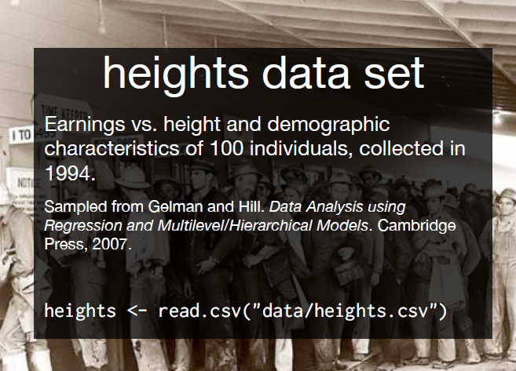


Linear Regression
Linear Regression

Linear Regression
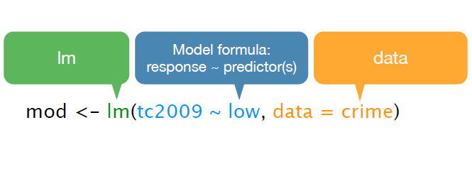
Linear Regression
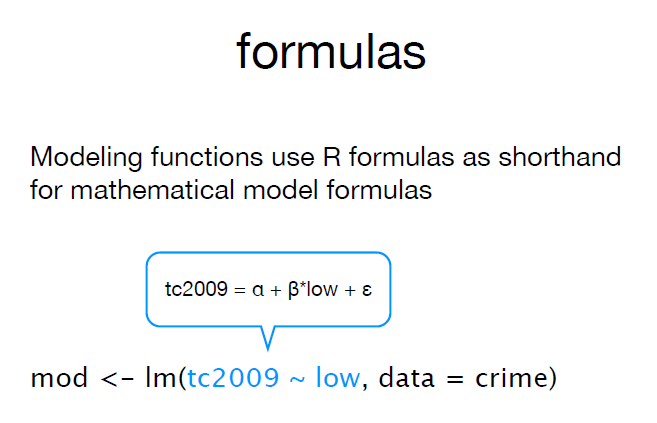
Linear Regression

Linear Regression
mod <- lm(tc2009 ~ low, data = crime)
mod
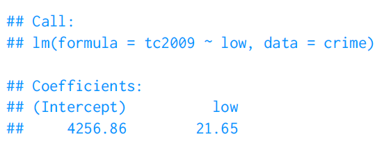
Linear Regression
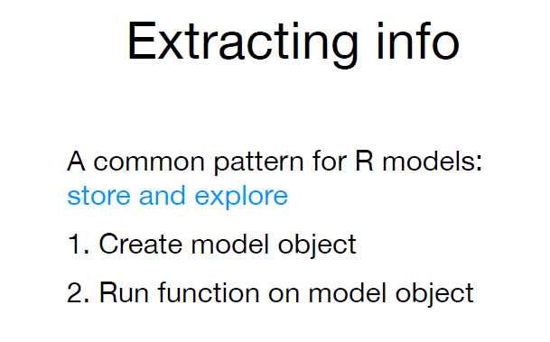
Linear Regression
Linear Regression
coef(mod)
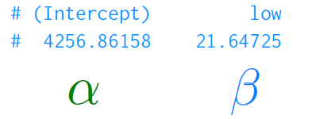
Linear Regression
coef(mod)
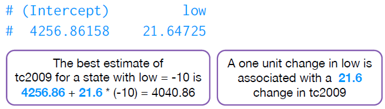
Linear Regression
summary(mod)
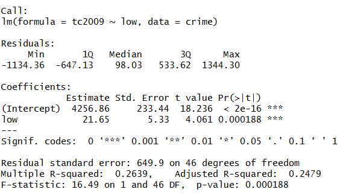
Linear Regression
summary(mod)

Heights Dataset
How does height influence earnings? Fit a linear model to the heights data set, with 'earn' as the dependent variable and 'height' as the independent variable.
Describe to your neighbor the relationship between height and earnings. Do they interpret is similarly?
heights <- read.csv("data/heights.csv")
summary(heights)

Heights Dataset
mod <- lm(earn ~ height, data = heights)
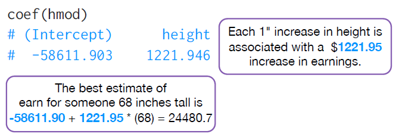
Heights Dataset
library(ggplot2)
qplot(height, earn, data = heights) +
geom_smooth(se = FALSE, method = lm)
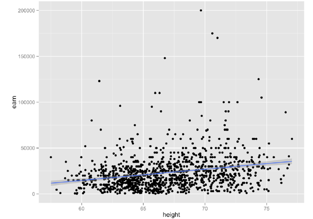
Heights Dataset
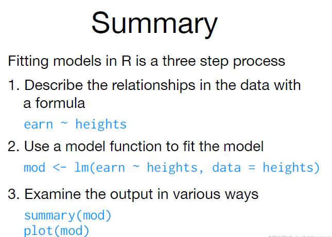
Heights Dataset
summary(mod)
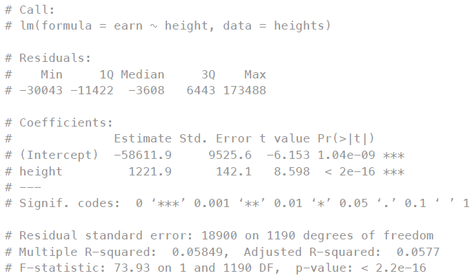
Heights Dataset
summary(mod)

Assumptions
- Linearity: The relationship between X and the mean of Y is linear.
- Homoscedasticity: The variance of residual is the same for any value of X.
- Independence: Observations are independent of each other.
- Normality: For any fixed value of X, Y is normally distributed.
more on assumptions: http://data.library.virginia.edu/diagnostic-plots/
Assumptions
- Linearity: The relationship between X and the mean of Y is linear.
library(ggplot2)
qplot(height, earn, data = heights)

Assumptions
- Homoscedasticity: The variance of residual is the same for any value of X.
- Independence: Observations are independent of each other.
- Normality: For any fixed value of X, Y is normally distributed.
plot(mod)

Regression with Categorical Variable
Fit a linear model to the heights data set. This time regress earn on race. How do you interpret the results?
Regression with Categorical Variable
rmod <- lm(earn ~ race, data = heights)
coef(rmod)

Regression with Categorical Variable
One value of the variable is chosen as a baseline. Each remaining value gets its own coefficient. Interpret coefficients as the effect of moving from the baseline value to the new value.
Regression with Categorical Variable
coef(rmod)

Regression with Categorical Variable
summary(rmod)

Regression with Categorical Variable
summary(rmod)

Regression with Multiple Variables
amod <- lm(earn ~ height + sex + age + race + ed, data = heights)
amod <- lm(earn ~ ., data = heights)
Regression with Multiple Variables
summary(amod)
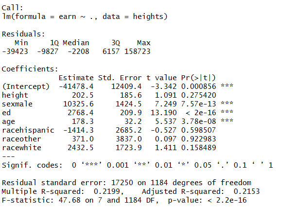